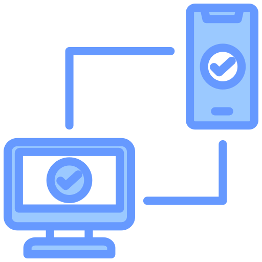

La autenticación verifica la identidad de usuarios, dispositivos o sistemas antes de permitir el acceso a recursos, protegiendo así datos y sistemas. Las contraseñas son el método más común, pero su eficacia depende de su complejidad y buenas prácticas. Los avances en biometría, como el reconocimiento facial y de huellas dactilares, añaden seguridad, mientras que la autenticación multifactor (MFA), que combina varios métodos, ha ganado popularidad por su capacidad de reducir el riesgo de intrusiones.

El control de acceso es un componente fundamental en la seguridad de la información, ya que limita quién puede acceder a recursos en un sistema, siguiendo el principio del mínimo privilegio. Este principio establece que los usuarios solo deben tener acceso a la información y recursos necesarios para realizar sus funciones, minimizando así el riesgo de uso indebido o exposición de datos sensibles.

La autenticación y el control de acceso son esenciales para la seguridad. La autenticación verifica la identidad del usuario, y el control de acceso regula sus acciones. Por ejemplo, un empleado se autentica con su huella dactilar y accede solo a recursos según su rol. La gestión de estos sistemas es compleja y debe ser constante por la evolución de las amenazas. Además, es vital educar a los usuarios sobre buenas prácticas de seguridad, como usar contraseñas fuertes y no compartir información de autenticación.
